基于Linux异步I/O和协程的高性能异步编程框架设计与实现
计算机科学与技术学院2018级 校际交流1班
答辩学生：车春池
指导老师：邵志远
目录
研究背景
考虑一个非常通用的后端开发场景：

问题一：同步I/O会阻塞线程
问题二：线程间切换开销大
研究背景
一个解决方案：

- 同步I/O-->异步I/O
- 线程-->协程
研究背景
什么是异步I/O？
- 异步I/O是一种不阻塞的I/O模型；
- 同步I/O在用户线程发起请求到I/O事件
完成之间存在阻塞现象； -
异步I/O在用户线程发起请求后不阻塞直接
返回到用户态，用户线程可以执行
其他任务，I/O事件完成后内核通知用户线程； -
异步I/O消除了线程阻塞现象，能降低网络
或存储系统的延迟。

Linux于5.1版本推出io_uring异步I/O接口
研究背景
io_uring架构：
- 使用共享内存来实现内核态和用户态之间的信息交换；
- 提交队列用来提交I/O请求；
- 完成队列用于收割I/O完成事件；
- 支持无锁并发，内部通过内存屏障技术实现状态同步。

研究背景
什么是协程？
- 协程可以被理解为能挂起和恢复的函数；
- 协程恢复时从上次挂起的地方继续执行；
- 相比线程的优势：切换开销小；
- 相比线程的劣势：不能利用多核CPU，
无法并发执行。

图片出处
研究背景
什么是异步编程框架？
- 对异步I/O和协程进行封装；
- 向上层网络/存储应用提供简单易用的编程接口；
- 赋予代码异步执行的能力；
- 相比同步I/O和多线程框架，更加轻量和高性能。

研究现状
目前国内外关于异步编程框架的研究现状主要体现在几个开源项目上：
- Tokio；最成熟的Rust异步运行时；
- Libco：微信后台C++协程库；
- Goroutine：Go语言原生协程；
- Node.js：跨平台的JavaScript运行时。

研究目标
基于io_uring和Rust/C++语言中的协程设计并实现高性能的异步编程框架：
- 功能上：提供构建异步网络/存储应用程序的基础API；
- 性能上：拥有比当前开源社区中主流的异步编程框架更高的性能。

整体架构设计

基础层负责底层封装，应用层负责提供API。
多核架构设计
- 参考Thread-Per-Core架构设计；
- 为每个核创建一个io_uring实例；
- 在同一个io_uring实例注册的Task只能在同一个核上运行；
- 设计目的是减少核间数据同步和线程切换。

Task模块设计
- 基于面向对象的思想，将所有I/O操作统一抽象成Op类；
- 继承Op父类可派生出Op子类，每个Op子对象对应一个I/O操作；
- 一个Task由一个或多个Op子对象呈树状构成。

Task模块设计
- Task中的每个Op子对象均为一个切换点；
- Task运行到切换点有两种状态：就绪和等待；